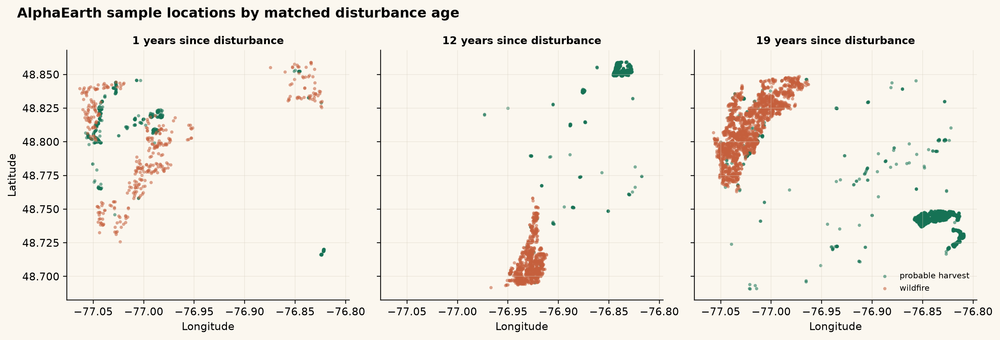
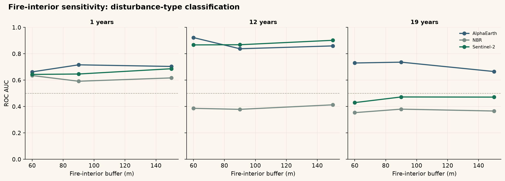
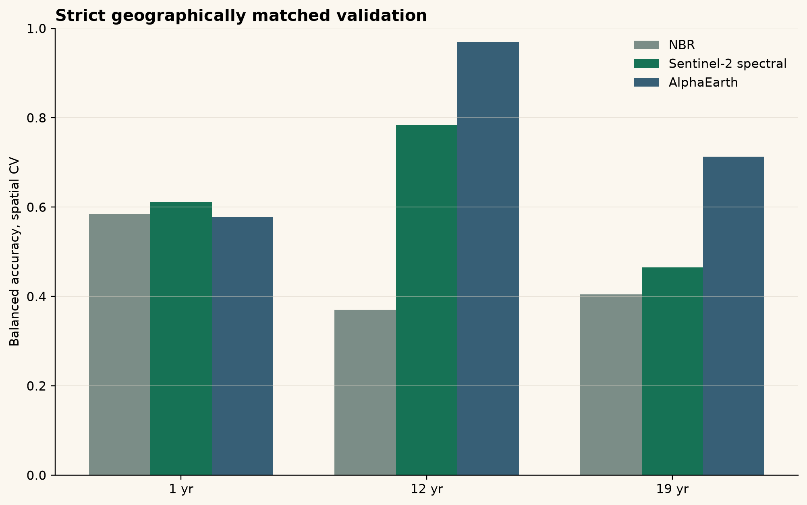
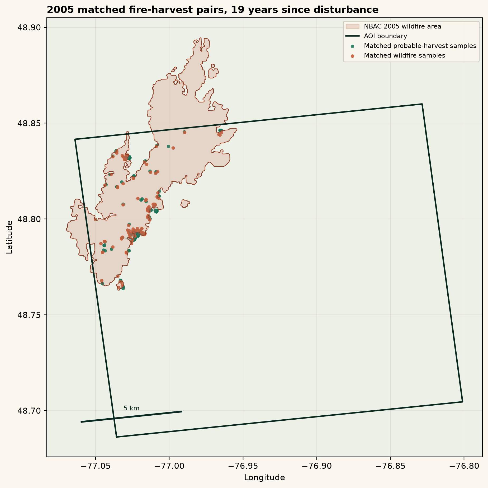
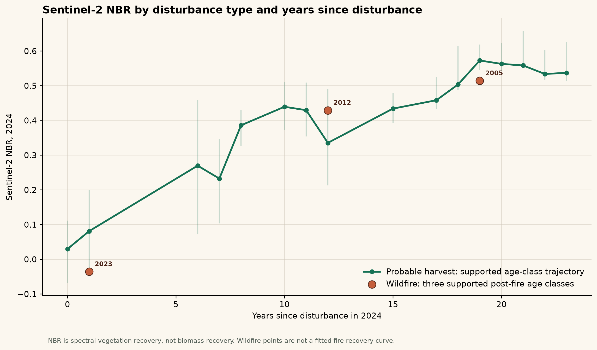
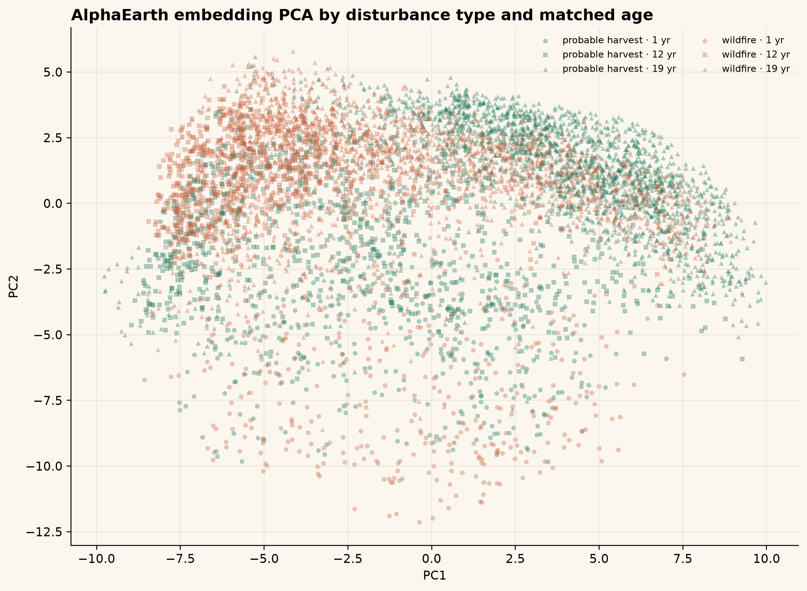

Modest separation; not the central result.
Boreal Ledger
Hansen + NBAC + Sentinel-2 + AlphaEarth
Disturbance history in satellite embedding space
A spatially matched comparison of wildfire and probable post-harvest boreal forest conditions near Lebel-sur-Quevillon, Quebec.
View repositoryResearch question
Can disturbance type remain distinguishable years after canopy loss?
The experiment holds time since disturbance constant and asks whether wildfire and probable harvest are more separable in AlphaEarth annual embeddings than in conventional Sentinel-2 spectral information.
Study design
One landscape, three matched disturbance years, one observation year.
Interesting, but matching is weaker and sample size is smaller.
The cleanest comparison after fire-interior sensitivity.
Wildfire is Hansen dated canopy loss spatially and temporally matched to NBAC fire polygons. Probable harvest is the non-fire residual Hansen canopy-loss class, not directly observed harvest.
Why matching matters
The first result was strong, but geography mattered.
The initial balanced sample showed spatial confounding and sensitivity to fire-perimeter edge proximity. The final validation therefore uses one-to-one geographic matching, pair-level spatial folds, and fire interiors defined before sampling.

Fire-interior sensitivity
Excluding fire-edge pixels weakens the effect, but does not erase it at 19 years.
The public result is centered on the stricter 19-year comparison, not the original edge-sensitive AUC. At 150 m from the mapped fire perimeter edge, AlphaEarth remains above both Sentinel-2 baselines.

Main result
At 19 years, AlphaEarth retains greater separability than spectral baselines.
With a 90 m fire-interior buffer, the matched 2005 comparison uses 222 fire-harvest pairs separated by a median of 0.160 km.
| Buffer | NBR AUC | Sentinel-2 AUC | AlphaEarth AUC |
|---|---|---|---|
| 90 m | 0.380 | 0.473 | 0.736 |
| 150 m | 0.366 | 0.472 | 0.666 |


2005 matched pairs
The cleanest case is spatially close and still explicitly caveated.
The 19-year comparison has 222 matched pairs at 90 m and 150 m fire interiors. Median pair distance is 0.160 km at 90 m and 0.133 km at 150 m.
This supports disturbance-type separability in feature space. It does not prove a causal effect of fire or harvest.
Additional checks
The conventional NBR baseline remains useful context, not the final claim.


Limitations
- Probable harvest is inferred from non-fire residual Hansen canopy loss; it is not directly observed.
- The comparison is observational, not a randomized treatment design.
- Only three matched fire years are available.
- Residual site-condition confounding may remain after geographic matching.
- AlphaEarth embeddings are representation features, not direct ecological variables.
Reproducibility
Transparent workflow, cautious interpretation.
AOI
Disturbance attribution
Matched samples
2024 observations
Spatial CV
Fire-interior sensitivity